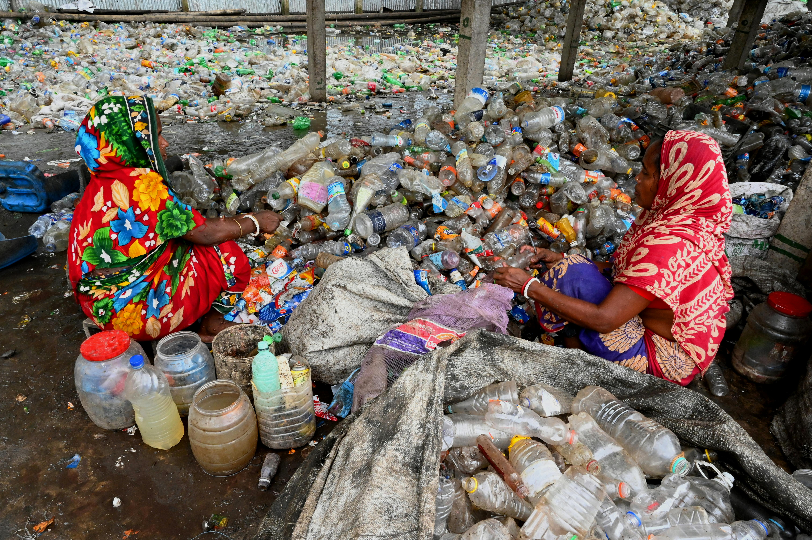
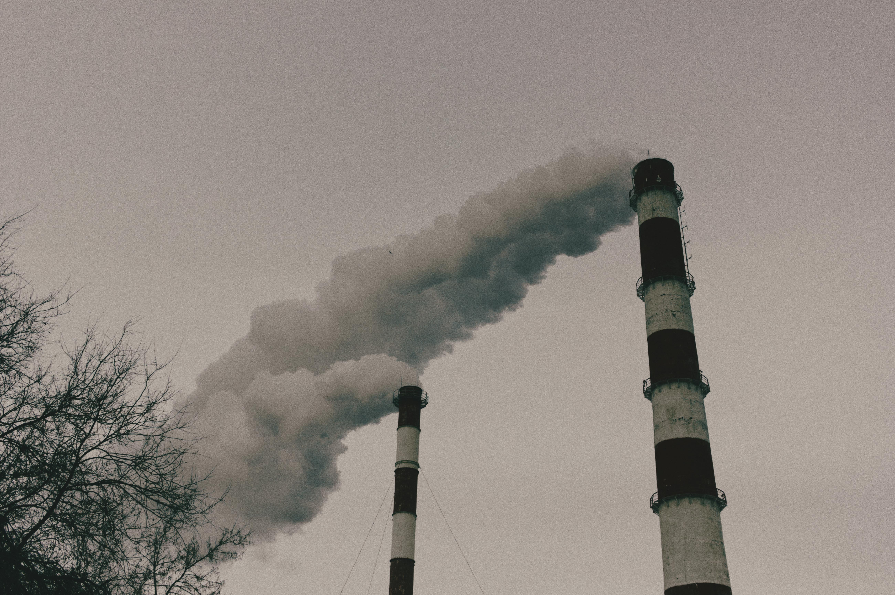
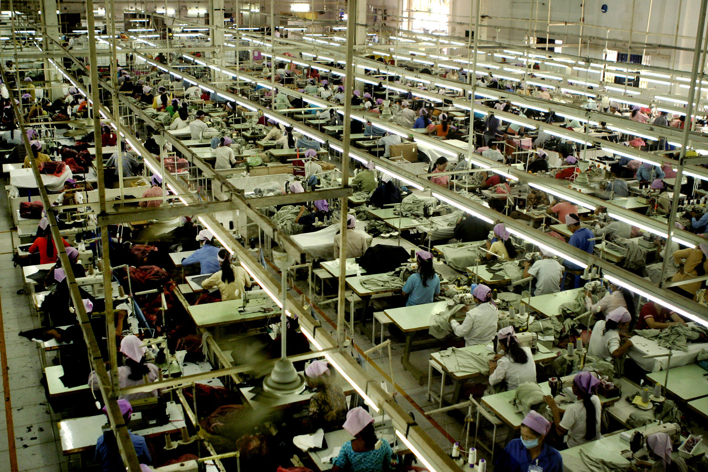

Impatto ambientale e sociale
Impatto ambientale
Il fast fashion è uno dei settori più inquinanti al mondo. Dietro questi prodotti si nasconde un sistema produttivo intensivo che consuma enormi quantità di risorse naturali, produce scarti tossici e contribuisce significativamente alle emissioni globali di gas serra.

Inquinamento da microplastiche
LEGGI
Consumo di acqua e risorse naturali
LEGGI

Emissioni di CO₂
LEGGI
Impatto sociale
Oltre al danno ambientale, il fast fashion ha un impatto sociale profondo e spesso invisibile. Dietro il prezzo basso di una maglietta o di un paio di jeans si nasconde una catena produttiva fondata su sfruttamento, disuguaglianza e violazioni dei diritti umani.
